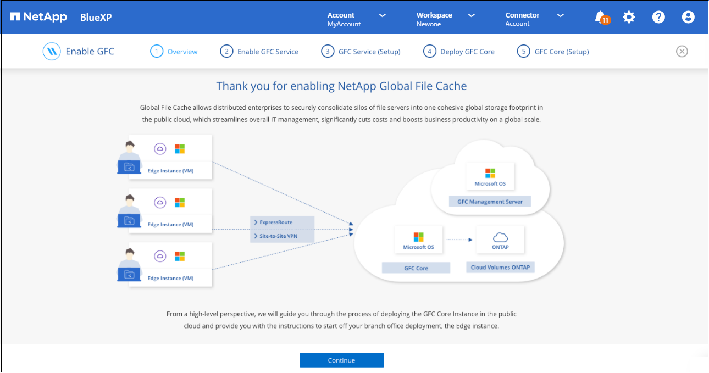
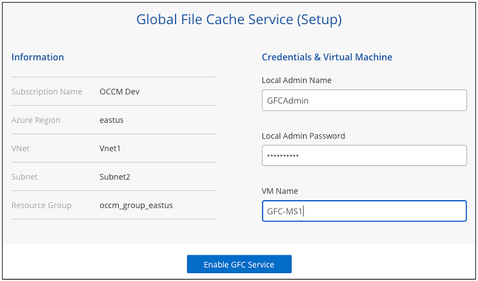
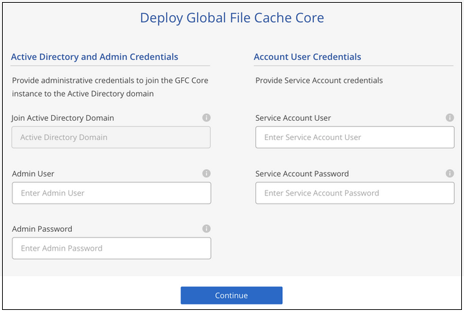
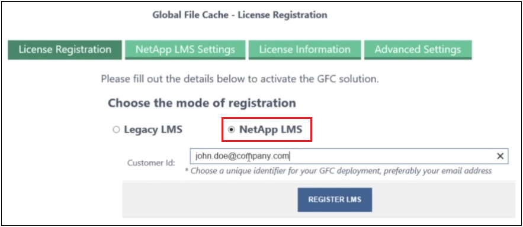

Notes de mise à jour
Notes de mise à jour
Pour commencer
 Suggérer des modifications
Suggérer des modifications
Vous utilisez BlueXP pour déployer le serveur de gestion de la mise en cache BlueXP Edge et le logiciel principal dans l’environnement de travail.
Activez la mise en cache BlueXP Edge à l’aide de BlueXP
Dans cette configuration, vous déployez le serveur de gestion de la mise en cache BlueXP Edge et le cœur de mise en cache BlueXP Edge dans le même environnement de travail que celui dans lequel vous avez créé votre système Cloud Volumes ONTAP à l’aide de BlueXP.
Regarder "vidéo" pour voir les étapes du début à la fin.
Démarrage rapide
Pour démarrer rapidement, suivez ces étapes ou faites défiler jusqu’aux sections restantes pour obtenir des informations détaillées :
 Déployez Cloud Volumes ONTAP
Déployez Cloud Volumes ONTAPDéployez Cloud Volumes ONTAP et configurez les partages de fichiers SMB. Pour plus d’informations, voir "Lancement d’Cloud Volumes ONTAP dans Azure", "Lancement d’Cloud Volumes ONTAP dans AWS", ou "Lancement d’Cloud Volumes ONTAP dans Google Cloud".
 Déployez le serveur de gestion de la mise en cache BlueXP Edge
Déployez le serveur de gestion de la mise en cache BlueXP EdgeDéployez une instance du serveur de gestion de la mise en cache BlueXP Edge dans le même environnement de travail que l’instance de Cloud Volumes ONTAP.
 Déployez le cœur de la mise en cache BlueXP Edge
Déployez le cœur de la mise en cache BlueXP EdgeDéployez une ou plusieurs instances du noyau de mise en cache BlueXP Edge dans le même environnement de travail que l’instance de Cloud Volumes ONTAP et rejoignez-le dans votre domaine Active Directory.
 Octroi de licences pour la mise en cache BlueXP Edge
Octroi de licences pour la mise en cache BlueXP EdgeConfigurez le service BlueXP Edge Caching License Management Server (LMS) sur une instance BlueXP Edge Caching Core. Vous aurez besoin de vos identifiants NSS ou d’un ID client et d’un numéro d’abonnement fournis par NetApp pour activer votre abonnement.
 Déployez les instances de mise en cache en périphérie BlueXP
Déployez les instances de mise en cache en périphérie BlueXPVoir "Déploiement des instances BlueXP Edge Caching" Pour déployer les instances de mise en cache en périphérie BlueXP dans chaque emplacement distant. Cette étape n’est pas effectuée avec BlueXP.
Déployez Cloud Volumes ONTAP comme plateforme de stockage
La mise en cache BlueXP Edge prend en charge Cloud Volumes ONTAP déployé dans Azure, AWS et Google Cloud. Pour obtenir des informations détaillées sur les prérequis, les exigences et les instructions de déploiement, voir "Lancement d’Cloud Volumes ONTAP dans Azure", "Lancement d’Cloud Volumes ONTAP dans AWS", ou "Lancement d’Cloud Volumes ONTAP dans Google Cloud"
Notez la condition supplémentaire de mise en cache BlueXP Edge suivante :
-
Vous devez configurer les partages de fichiers SMB sur l’instance de Cloud Volumes ONTAP.
Si aucun partage de fichiers SMB n’est configuré sur l’instance, vous êtes invité à configurer les partages SMB lors de l’installation des composants de mise en cache BlueXP Edge.
Activez la mise en cache BlueXP Edge dans votre environnement de travail
L’assistant d’installation vous guide tout au long des étapes de déploiement de l’instance du serveur de gestion de la mise en cache BlueXP Edge et de l’instance principale de mise en cache BlueXP Edge, comme souligné ci-dessous.

-
Sélectionnez l’environnement de travail dans lequel vous avez déployé Cloud Volumes ONTAP.
-
Dans le panneau Services, cliquez sur Activer pour le service Edge caching.

-
Lisez la page vue d’ensemble et cliquez sur Continuer.
-
Si aucun partage SMB n’est disponible sur l’instance Cloud Volumes ONTAP, vous êtes invité à entrer les informations du serveur SMB et du partage SMB afin de créer le partage maintenant. Pour plus de détails sur la configuration SMB, voir "Plateforme de stockage".
Lorsque vous avez terminé, cliquez sur Continuer pour créer le partage SMB.

-
Sur la page Service de cache de fichiers global, entrez le nombre d’instances Global File cache Edge que vous prévoyez de déployer, puis assurez-vous que votre système répond aux exigences relatives aux règles de configuration réseau et de pare-feu, aux paramètres Active Directory et aux exclusions antivirus. Voir "Prérequis" pour en savoir plus.

-
Après avoir vérifié que les exigences ont été respectées ou que vous disposez des informations nécessaires pour répondre à ces exigences, cliquez sur Continuer.
-
Entrez les informations d’identification d’administration que vous utiliserez pour accéder à la machine virtuelle du serveur de gestion de la mise en cache BlueXP Edge, puis cliquez sur Activer GFC Service. Pour Azure et Google Cloud, vous entrez les identifiants en tant que nom d’utilisateur et mot de passe. Pour AWS, vous sélectionnez la paire de clés appropriée. Vous pouvez modifier le nom de la machine virtuelle/de l’instance si vous le souhaitez.

-
Une fois le déploiement du service de gestion de la mise en cache BlueXP Edge réussi, cliquez sur Continuer.
-
Pour le cœur de mise en cache de périphérie BlueXP, entrez les informations d’identification de l’utilisateur admin pour rejoindre le domaine Active Directory, ainsi que les informations d’identification de l’utilisateur du compte de service. Cliquez ensuite sur Continuer.
-
L’instance centrale de mise en cache en périphérie BlueXP doit être déployée dans le même domaine Active Directory que l’instance Cloud Volumes ONTAP.
-
Le compte de service est un utilisateur de domaine et fait partie du groupe BULILTIN\opérateurs de sauvegarde sur l’instance Cloud Volumes ONTAP.

-
-
Entrez les informations d’identification d’administration que vous utiliserez pour accéder à la machine virtuelle principale de mise en cache de BlueXP Edge, puis cliquez sur Deploy GFC Core. Pour Azure et Google Cloud, vous entrez les identifiants en tant que nom d’utilisateur et mot de passe. Pour AWS, vous sélectionnez la paire de clés appropriée. Vous pouvez modifier le nom de la machine virtuelle/de l’instance si vous le souhaitez.

-
Une fois le noyau de mise en cache BlueXP Edge déployé, cliquez sur aller au tableau de bord.

Le tableau de bord indique que l’instance du serveur de gestion et l’instance Core sont à la fois * On* et fonctionnent.
Installez la mise en cache BlueXP Edge sous licence
Avant de pouvoir utiliser la mise en cache BlueXP Edge, vous devez configurer le service BlueXP Edge Caching License Management Server (LMS) sur une instance BlueXP Edge Caching Core. Vous aurez besoin de vos identifiants NSS ou d’un ID client et d’un numéro d’abonnement fournis par NetApp pour activer votre abonnement.
Dans cet exemple, nous allons configurer le service LMS sur une instance Core que vous venez de déployer dans le cloud public. Il s’agit d’un processus unique qui configure votre service LMS.
-
Ouvrez la page d’enregistrement de licence Global File cache sur le noyau de mise en cache de BlueXP Edge (le cœur que vous désignez comme service LMS) à l’aide de l’URL suivante. Remplacez <ip_address> par l’adresse IP du noyau de mise en cache de BlueXP Edge :https://<ip_address>/lms/api/v1/config/lmsconfig.html[]
-
Cliquez sur * “Continuer sur ce site (non recommandé)”* pour continuer. Une page qui vous permet de configurer le LMS ou de vérifier les informations de licence existantes s’affiche.

-
Choisissez le mode d’enregistrement :
-
Le système de gestion de l’apprentissage NetApp est utilisé pour les clients qui ont acheté des licences NetApp BlueXP Edge cache Edge auprès de NetApp ou de ses partenaires certifiés. (Préféré)
-
« LMS existant » est utilisé pour les clients existants ou les clients de test qui ont reçu un identifiant client via le support NetApp. (Cette option a été obsolète.)
-
-
Dans cet exemple, cliquez sur NetApp LMS, entrez votre ID client (de préférence votre adresse e-mail), puis cliquez sur Register LMS.

-
Consultez pour obtenir un e-mail de confirmation de NetApp incluant le numéro d’abonnement et le numéro de série du logiciel Fibre Channel.

-
Cliquez sur l’onglet NetApp LMS Settings.
-
Sélectionnez abonnement de licence réseau sans réseau de stockage (GGFC License Subscription), saisissez votre numéro d’abonnement de logiciel réseau réseau de stockage (GFC) et cliquez sur Envoyer.

Un message indiquant que votre abonnement à la licence réseau sans réseau a été enregistré avec succès et activé pour l’instance LMS s’affiche. Tout achat ultérieur sera automatiquement ajouté à l’abonnement à la licence réseau.
-
Vous pouvez également cliquer sur l’onglet informations de licence pour afficher toutes les informations de votre licence de réseau de stockage.
Si vous avez déterminé que vous devez déployer plusieurs cœurs de mise en cache BlueXP Edge pour prendre en charge votre configuration, cliquez sur Ajouter une instance Core dans le tableau de bord et suivez les instructions de l’assistant de déploiement.
Une fois votre déploiement Core terminé, vous devez "Déployez les instances de mise en cache en périphérie BlueXP" dans chacun de vos bureaux distants.
Déployer des instances Core supplémentaires
Si votre configuration nécessite l’installation de plusieurs cœurs de mise en cache BlueXP Edge à cause d’un grand nombre d’instances Edge, vous pouvez ajouter un autre cœur à l’environnement de travail.
Lors du déploiement d’instances Edge, vous configurez certains pour vous connecter au premier Core et d’autres au second Core. Les deux instances de base accèdent au même système de stockage back-end (votre instance Cloud Volumes ONTAP) dans l’environnement de travail.
-
Dans le tableau de bord Global File cache, cliquez sur Add Core instance.

-
Entrez les informations d’identification de l’utilisateur admin pour rejoindre le domaine Active Directory et les informations d’identification de l’utilisateur du compte de service. Cliquez ensuite sur Continuer.
-
L’instance principale de mise en cache en périphérie BlueXP doit se trouver dans le même domaine Active Directory que l’instance Cloud Volumes ONTAP.
-
Le compte de service est un utilisateur de domaine et fait partie du groupe BULILTIN\opérateurs de sauvegarde sur l’instance Cloud Volumes ONTAP.
-
-
Entrez les informations d’identification d’administration que vous utiliserez pour accéder à la machine virtuelle principale de mise en cache de BlueXP Edge, puis cliquez sur Deploy GFC Core. Pour Azure et Google Cloud, vous entrez les identifiants en tant que nom d’utilisateur et mot de passe. Pour AWS, vous sélectionnez la paire de clés appropriée. Vous pouvez modifier le nom de la machine virtuelle si vous le souhaitez.
-
Une fois le noyau de mise en cache BlueXP Edge déployé, cliquez sur aller au tableau de bord.

Le Tableau de bord reflète la deuxième instance Core pour l’environnement de travail.